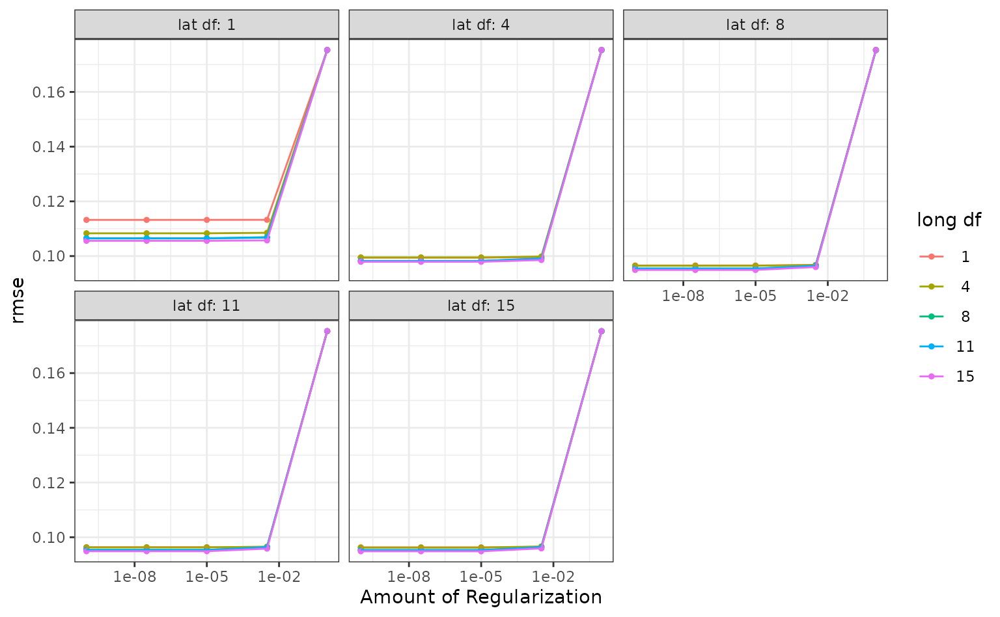

Hyper-parameter tuning with agua
agua sets up the infrastructure for the tune package to enable
optimization of h2o models. Similar to other models, we label the
hyperparameter with the tune() placeholder and feed them
into tune_*() functions such as tune_grid()
and tune_bayes().
Let’s go through the example from Introduction to tune with the Ames housing data.
library(tidymodels)
library(agua)
library(ggplot2)
theme_set(theme_bw())
doParallel::registerDoParallel()
h2o_start()
#> Warning: JAVA not found, H2O may take minutes trying to connect.
#> Warning in h2o.clusterInfo():
#> Your H2O cluster version is (5 months and 15 days) old. There may be a newer version available.
#> Please download and install the latest version from: https://h2o-release.s3.amazonaws.com/h2o/latest_stable.html
data(ames)
set.seed(4595)
data_split <- ames %>%
mutate(Sale_Price = log10(Sale_Price)) %>%
initial_split(strata = Sale_Price)
ames_train <- training(data_split)
ames_test <- testing(data_split)
cv_splits <- vfold_cv(ames_train, v = 10, strata = Sale_Price)
ames_rec <-
recipe(Sale_Price ~ Gr_Liv_Area + Longitude + Latitude, data = ames_train) %>%
step_log(Gr_Liv_Area, base = 10) %>%
step_ns(Longitude, deg_free = tune("long df")) %>%
step_ns(Latitude, deg_free = tune("lat df"))
lm_mod <- linear_reg(penalty = tune()) %>%
set_engine("h2o")
lm_wflow <- workflow() %>%
add_model(lm_mod) %>%
add_recipe(ames_rec)
grid <- lm_wflow %>%
extract_parameter_set_dials() %>%
grid_regular(levels = 5)
ames_res <- tune_grid(
lm_wflow,
resamples = cv_splits,
grid = grid,
control = control_grid(save_pred = TRUE,
backend_options = agua_backend_options(parallelism = 5))
)
ames_res
#> # Tuning results
#> # 10-fold cross-validation using stratification
#> # A tibble: 10 × 5
#> splits id .metrics .notes .predictions
#> <list> <chr> <list> <list> <list>
#> 1 <split [1976/221]> Fold01 <tibble [250 × 7]> <tibble> <tibble>
#> 2 <split [1976/221]> Fold02 <tibble [250 × 7]> <tibble> <tibble>
#> 3 <split [1976/221]> Fold03 <tibble [250 × 7]> <tibble> <tibble>
#> 4 <split [1976/221]> Fold04 <tibble [250 × 7]> <tibble> <tibble>
#> 5 <split [1977/220]> Fold05 <tibble [250 × 7]> <tibble> <tibble>
#> 6 <split [1977/220]> Fold06 <tibble [250 × 7]> <tibble> <tibble>
#> 7 <split [1978/219]> Fold07 <tibble [250 × 7]> <tibble> <tibble>
#> 8 <split [1978/219]> Fold08 <tibble [250 × 7]> <tibble> <tibble>
#> 9 <split [1979/218]> Fold09 <tibble [250 × 7]> <tibble> <tibble>
#> 10 <split [1980/217]> Fold10 <tibble [250 × 7]> <tibble> <tibble>
#>
#> There were issues with some computations:
#>
#> - Warning(s) x10: data.table cannot be used without R package bit64 version 0...
#>
#> Run `show_notes(.Last.tune.result)` for more information.The syntax is the same, we provide a workflow and the grid of
hyperparameters, then tune_grid() returns cross validation
performances for every parameterization per resample. There are 2
differences to note when tuning h2o models:
We have to call
h2o_start()beforehand to enable all the h2o side of computations.We can further configure tuning on the h2o server by supplying the
backend_optionsargument incontrol_grid()with anagua_backend_options()object. Currently there is only one supported argument,parallelism, which specifies the number of models built in parallel. In the example above, we tell the h2o server to build 5 models in parallel. Note the parallelism on the h2o server is different than a parallel backend in R such asdoParallel. The former parallelizes over model parameters while the latter over parameters in the preprocessor. See the next section for more details.
Other functions in tune for working with tuning results such as
collect_metrics(), collect_predictions() and
autoplot() will also recognize ames_res and
work as expected.
collect_metrics(ames_res, summarize = FALSE)
#> # A tibble: 2,500 × 8
#> id penalty `long df` `lat df` .metric .estimator .estimate .config
#> <chr> <dbl> <int> <int> <chr> <chr> <dbl> <chr>
#> 1 Fold01 1e-10 1 1 rmse standard 0.115 Prepro…
#> 2 Fold01 1e-10 1 1 rsq standard 0.550 Prepro…
#> 3 Fold02 1e-10 1 1 rmse standard 0.112 Prepro…
#> 4 Fold02 1e-10 1 1 rsq standard 0.603 Prepro…
#> 5 Fold03 1e-10 1 1 rmse standard 0.116 Prepro…
#> 6 Fold03 1e-10 1 1 rsq standard 0.563 Prepro…
#> 7 Fold04 1e-10 1 1 rmse standard 0.112 Prepro…
#> 8 Fold04 1e-10 1 1 rsq standard 0.581 Prepro…
#> 9 Fold05 1e-10 1 1 rmse standard 0.0998 Prepro…
#> 10 Fold05 1e-10 1 1 rsq standard 0.637 Prepro…
#> # ℹ 2,490 more rows
autoplot(ames_res, metric = "rmse")
Tuning internals
For users interested in the performance characteristics of tuning h2o
models with agua, it is helpful to know some inner workings of h2o. agua
uses the h2o::h2o.grid() function for tuning model
parameters, which accepts a list of possible combinations and search for
the optimal one for a given dataset.
In the example above, we have three tuning parameters of two types:
tuning parameters in the model:
penalty.tuning parameters in the preprocessor:
long dfandlat df.
This can be extracted by
extract_parameter_set_dials()
extract_parameter_set_dials(lm_wflow)
#> Collection of 3 parameters for tuning
#>
#> identifier type object
#> penalty penalty nparam[+]
#> long df deg_free nparam[+]
#> lat df deg_free nparam[+]Since h2o.grid is only responsible for optimizing model
parameters, the preprocessor parameters long df and
lat df will be iterated as usual on the R side (also for
this reason you can’t use agua with
control_grid(parallel_over = 'everything')). Once a certain
combination of them is chosen, agua will engineer all the relevant
features and pass the data and model definitions to
h2o_grid(). For example, say we choose the preprocess
parameters to be long df = 4 and lat df = 1,
the analysis set in one particular fold becomes
#> # A tibble: 1,976 × 7
#> Gr_Liv_Area Sale_Price Longitude_ns_1 Longitude_ns_2 Longitude_ns_3
#> <dbl> <dbl> <dbl> <dbl> <dbl>
#> 1 2.95 5.02 0.238 0.564 0.211
#> 2 2.95 5.10 0.440 0.466 0.149
#> 3 3.04 5.02 0.452 0.457 0.145
#> 4 3.04 4.94 0.445 0.462 0.147
#> 5 2.96 5.00 0.00276 -0.0705 0.182
#> 6 3.01 4.83 0.0235 -0.134 0.347
#> 7 2.95 5.09 0.0787 -0.178 0.459
#> 8 3.02 5.10 0.109 -0.186 0.482
#> 9 3.09 5.11 0.330 0.532 0.180
#> 10 3.24 4.93 0.317 0.538 0.184
#> # ℹ 1,966 more rows
#> # ℹ 2 more variables: Longitude_ns_4 <dbl>, Latitude_ns_1 <dbl>This is the data frame we will be passing to the h2o server for one
iteration of training. We have now completed computations on the R side
with the rest delegated to the h2o server. For this preprocessor
combination, we have 5 possible choices of the model parameter
penalty
grid %>%
filter(`long df` == 4, `lat df` == 1) %>%
pull(penalty)
#> [1] 1.00e-10 3.16e-08 1.00e-05 3.16e-03 1.00e+00Then the option
control_grid(backend_options = agua_backend_options(parallelism = 5))
tells the h2o server to build 5 models with these choices in
parallel.
If you have a parallel backend in R like doParallel
registered, combinations of long df and lat df
will be selected in parallel, as is the prepared analysis set. This is
independent of how parallelism is configured on the h2o
server.
Regarding the performance of model evaluation,
h2o::h2o.grid() supports passing in a validation frame but
does not return predictions on that data. In order to compute metrics on
the holdout sample, we have to retrieve the model, convert validation
data into the desired format, predict on it, and convert the results
back to data frames. In the future we hope to get validation predictions
directly thus eliminating excessive data conversions.